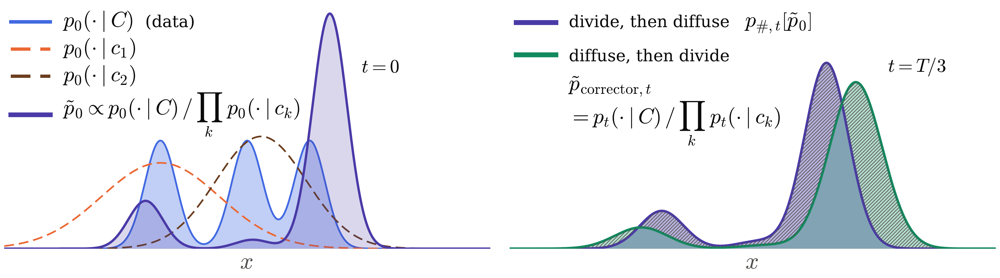
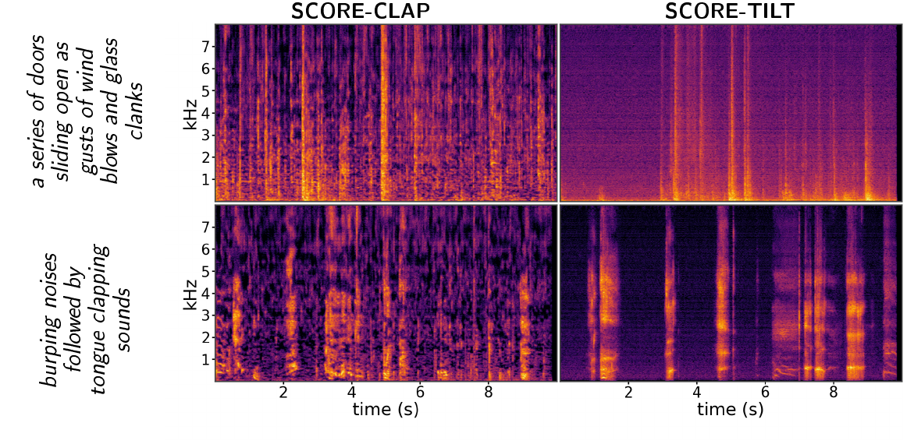

Predict
The pretrained diffusion model predicts the clean sample x̂₀ during ordinary denoising.
Anonymous paper submission
Model-Intrinsic Reward Alignment for Compositional Diffusion
A diffusion model already contains a signal for whether all concepts in a prompt are expressed together. TILT turns that signal into a test-time reward—without training a reward model or fine-tuning the generator.
The problem
Compositional prompts often collapse to the easy concept: one object, attribute, or relation dominates while another disappears. We want samples from pure modes—regions where the full prompt is explained better than any constituent concept alone.
Prior corrector-based methods suppress single-concept modes directly at intermediate diffusion times. But division and diffusion do not commute: diffuse, then divide is generally not the same distribution as divide, then diffuse.
TILT starts from the target we actually care about at t = 0 and asks a different question: what intermediate steering makes the final clean sample land in a pure mode?

For a composed prompt C = {c₁, …, cₖ}, TILT rewards a clean sample when the pretrained model assigns it high likelihood under the joint prompt relative to the individual concepts.
High reward means the full composition explains the sample better than any constituent concept on its own.
The pretrained diffusion model predicts the clean sample x̂₀ during ordinary denoising.
Estimate joint-vs-constituent likelihood ratios using differences of the model's own diffusion energies.
Move x̂₀ toward higher intrinsic reward, then continue the standard DDIM update.
Same SDXL backbone and the same random seed within each row. TILT more consistently keeps both objects, attributes, and relations visible. Click any image to enlarge it.
Even for simple prompts of the form “a [animal] and an [object],” the base model often represents one concept more strongly than the other. This imbalance is the observable face of concept dominance.
TILT explicitly favors samples for which the concepts support the joint condition together, rather than letting a single concept explain the generation.

TILT is defined through conditional likelihoods, not an image-specific encoder. We apply the same idea to AudioLDM without changing the reward definition.
This contrasts with extrinsic rewards that require separately trained modality-specific models such as CLIP for images or CLAP for audio.

Representative results from the current anonymous manuscript. See the paper for complete baselines, metrics, settings, and ablations.
@inproceedings{anonymous2027tilt,
title = {TILT: Model-Intrinsic Reward Alignment for Compositional Diffusion},
author = {Anonymous},
booktitle = {Under anonymous review},
year = {2027}
}